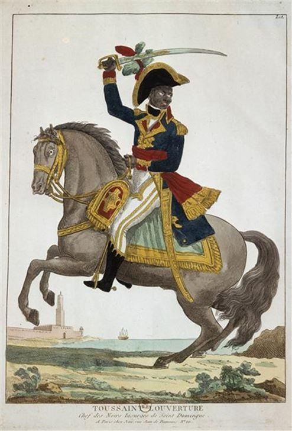

Chercheur en philosophie politique et analyste des relations internationales, Bruno Guigue revient sur les événements qui ont conduit à la démission du président bolivien Evo Morales.
La République espagnole croyait à la démocratie parlementaire, et Franco a instauré sa dictature. Salvador Allende croyait à la démocratie parlementaire, et on a eu Pinochet. Evo Morales croyait à la démocratie parlementaire, et un coup d’Etat l’a chassé du pouvoir.
Illustrations parmi tant d’autres d’une loi de l’histoire : face à des loups, ne jamais faire l’agneau. Comme les expériences précédentes, celle de Morales n’était pas sans défauts, mais elle était prometteuse. Aucun gouvernement latino-américain, dans la période récente, n’avait obtenu de tels résultats : forte croissance, redistribution des richesses, recul spectaculaire de la pauvreté. La Bolivie est le pays d’Amérique latine qui a la plus faible proportion d’illettrés après Cuba et le Venezuela. Or ces avancées sociales, fondées sur la nationalisation des compagnies gazières, sont précisément ce qui a scellé le sort d’Evo Morales.
Un président indigène qui travaille pour les humbles, voilà le scandale auquel il fallait mettre un terme. Assoiffée de vengeance, la bourgeoisie bolivienne a réussi à interrompre une expérience progressiste soutenue par les couches populaires.
Ce triomphe provisoire de la réaction suscite évidemment des questions redoutables. Comment le gouvernement légal de ce pays a-t-il pu subir, en toute impunité, l’incendie des maisons de ses propres ministres ?
Comment le président élu de cet Etat souverain a-t-il dû quitter le pays, visiblement sous la menace ?
Malheureusement, la réponse saute aux yeux : cette humiliation du pouvoir légitime par les bandes factieuses n’a été possible que parce qu’il était désarmé.
Les chefs de la police et de l’armée boliviennes, dûment formés à « l’Ecole des Amériques », ont trahi le président socialiste. Ils ont cautionné le coup d’Etat perpétré par la sénatrice d’un petit parti d’extrême droite qui s’est autoproclamée présidente, brandissant une Bible de dix kilos, devant une assemblée sans quorum !
La sénatrice Jeanine Añez s'est proclamée le 12 novembre 2019 Présidente par intérim de la Bolivie
Le président légitime Evo Morales a préféré l’exil à l’effusion de sang, et ce choix est respectable. Mais il ne dispense pas d’une réflexion sur les conditions de l’exercice du pouvoir lorsqu’on entend changer la société. Le contraste avec le Venezuela est frappant.
Tenté à Caracas, le même scénario a échoué lamentablement. Malgré la crise économique qui frappe le pays, l’armée vénézuélienne a résisté aux menaces et aux tentatives de corruption inouïes en provenance de Washington.
Cette fidélité de l’appareil militaire à la République bolivarienne est le mur qu’elle dresse contre les menées impérialistes. Mais elle n’est pas le fruit du hasard : militaire chevronné, Chavez a tout fait pour rallier l’armée, et Maduro a retenu la leçon. Le patriotisme anti-impérialiste est le ciment idéologique de la révolution bolivarienne.
Appuyée par une milice populaire d’un million de membres, cette force armée éduquée aux valeurs progressistes protège la République. C’est pourquoi la bourgeoisie inféodée à Washington a tenté d’assassiner Maduro, après avoir voulu le renverser lors d’une tentative de putsch grand-guignolesque. Le pacifisme dissuade rarement la bête féroce, et il n’y a pas de bête plus féroce que cette bête humaine qu’est la classe dominante ébranlée dans son assise matérielle, minée par la trouille de perdre ses avantages, et prête à tout ensevelir pour échapper au tribunal de l’histoire.
Pour parvenir à ses fins en politique, disait Machiavel, il faut être à la fois « lion et renard », faire usage de la force et de la ruse en fonction des circonstances. Mais pour faire usage de la force, encore faut-il en avoir. Aussi positive soit-elle pour la majorité de la population, une politique progressiste suscite toujours la haine recuite des possédants.
Cette haine de classe, véritable passion triste des privilégiés cramponnés à leur prébendes, ne tarira jamais. Il faut le savoir, et se donner les moyens de l’empêcher de nuire. Dans les conditions effectives du combat politique, ce qui détermine l’issue finale n’est pas la pureté des intentions, mais le rapport de forces.
Face à la coalition de la bourgeoisie locale et de l’impérialisme, les progressistes n’ont pas le choix des armes : il faut qu’ils les prennent, l’idéal étant évidemment de ne pas avoir à s’en servir, en comptant sur la faible propension de l’adversaire au suicide héroïque. Pour exercer cet effet dissuasif, il faut avoir des milliers de volontaires lourdement armés et prêts à défendre la révolution au péril de leur vie. C’est sans doute un effet collatéral de la passion de la gauche contemporaine pour les élections, mais il semble qu’on ait oublié la formule de Mao : «Le pouvoir est au bout du fusil.»
La naïveté devant la cruauté du monde mène rarement au succès, et le désarmement unilatéral est une forme d’immolation volontaire. On a sa conscience pour soi puisqu’on rejette la violence, mais cette noble attitude a pour inconvénient de réduire considérablement son espérance de vie.
Si l’on veut inscrire son action dans les faits, et rester en vie pour y parvenir, il vaut mieux renoncer à la « vision morale du monde », comme disait Hegel, et regarder la réalité en face. Le pacifisme dissuade rarement la bête féroce, et il n’y a pas de bête plus féroce que cette bête humaine qu’est la classe dominante ébranlée dans son assise matérielle, minée par la trouille de perdre ses avantages, et prête à tout ensevelir pour échapper au tribunal de l’histoire.
Sans armes, le peuple sera toujours vaincu, et ce n’est pas un hasard si les seules expériences révolutionnaires ayant abouti à une transformation effective de la société ont doublé l’outil politique d’un outil militaire. On peut toujours discuter de la nature et des limites de cette transformation. Mais si la Révolution française a mobilisé les soldats de l’An II, Si Toussaint Louverture, qui a conduit la première insurrection victorieuse d’esclaves noirs aux colonies, était d’abord un général de la Révolution, si la Révolution russe a créé l’Armée rouge, qui a vaincu les Blancs soutenus par quatorze nations impérialistes, puis les hordes hitlériennes à l’issue d’un combat titanesque, si la Révolution chinoise doit son succès en 1949 aux victoires militaires de Zhu De autant qu’aux idées de Mao, si la République socialiste du Vietnam a fini par vaincre l’appareil militaire des Etats-Unis, si le socialisme cubain doit sa survie à la victoire inaugurale contre l’impérialisme remportée en 1961 à la Baie des Cochons, c’est qu’il y a une constante vérifiée par l’expérience historique : des armes, oui, ou la défaite.
Morales dénonce un complot qui vient des Etats-Unis contre sa politique Si seulement l’on pouvait s’en passer, bien sûr, on le ferait. Mais le camp adverse laisse-t-il le choix ?
Ceux qui à Washington sabotent l’économie des pays en développement qui cherchent à s’émanciper de la tutelle occidentale, leur infligent des embargos meurtriers, financent des bandes factieuses, manipulent des opposants fantoches, importent le chaos et la terreur, ces bêtes féroces laissent-elles le choix à leurs victimes ?
Si Cuba socialiste ne s’était pas murée dans la défense intransigeante des acquis de la révolution, si Castro n’avait pas tué dans l’œuf toute velléité d’opposition manipulée par la CIA, le peuple cubain aurait-il aujourd’hui le meilleur système de santé et le meilleur système éducatif d’Amérique latine ?
En réalité, la voie électorale choisie par les partis progressistes est honorable, mais elle se heurte aux contradictions de la démocratie formelle. Il est naïf de croire que l’on va transformer la société en obtenant une majorité parlementaire. Car dans les conditions objectives qui sont celles d’une société capitaliste, la partie n’est pas loyale. On sait bien que la bourgeoisie contrôle l’économie et a la main sur les médias, mais on pense qu’on va convaincre le peuple de se rallier au socialisme. On mise alors sur le dévouement des militants pour contrebalancer l’influence des riches qui possèdent les moyens d’information et corrompent des pans entiers de la société pour asseoir leur domination. Mais peut-on citer un seul endroit où ce scénario idyllique s’est jamais réalisé ?
Cette noble démarche relève d’une croyance naïve à l’objectivité du jeu démocratique en pays capitaliste. Cette fable est à la politique ce que le roman à l’eau de rose est à la littérature. Car pour ébranler le pouvoir de la classe dominante, il faut d’abord accepter d’être minoritaire, puis élargir sa base sociale en nouant des alliances, enfin frapper le fer tant qu’il est chaud. La compétition électorale est l’un des instruments de la conquête du pouvoir, mais il n’est pas le seul. Et l’armement des classes populaires, pour un mouvement réellement progressiste, n’est pas une option parmi d’autres, c’est une condition de survie.
La constitution de cette force armée populaire ne servirait à rien, toutefois, si l’on ne s’attaquait pas d’emblée aux sources de l’aliénation : les médias de masse. Apparemment, la plupart des médias boliviens appartiennent encore à la bourgeoisie-colon. Autant jouer aux cartes en acceptant de confier tous les atouts à la partie adverse !
Or poser la question de la propriété des moyens d’information, c’est aussi poser la question de la propriété des moyens de production, les médias n’étant en réalité que les moyens de production de l’information.
Pour inverser le rapport de forces, et assurer le succès de la transformation sociale, on ne peut donc éviter d’arracher les moyens de production, y compris les moyens de production de l’information, des mains de la classe dominante. Faute d’atteindre ce point de bascule, l’échec est assuré. «L’Etat, disait Gramsci, c’est l’hégémonie cuirassée de coercition», c’est-à-dire l’idéologie dominante appuyée sur la force militaire, et réciproquement. C’est tout aussi vrai d’un Etat populaire, dont la conquête par les forces progressistes vise à transformer la société au profit des humbles.

Partager cette page